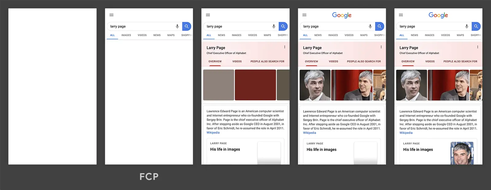

短答
首次内容绘制标记第一块文字或图片被画出来的时刻。
那个时刻可能只是一行导航文字，远早于常常作为最大元素的产品照片。两个定义回答不同的问题。页面可以很快画出一点东西，主对象仍然很晚。SEO 健康不应把它们收成一个“速度”词。
定义
当文档被头部的样式表或脚本挡住时，首次内容绘制很有用，因为在阻挡清除之前，任何内容都画不出来。它不描述布局移动，也不描述输入延迟。公开的时间线图片是这个概念的示意。它不是对 Mika、某位客户或本营销站的测量。
健康检查里怎么使用这个定义
记录在主对象之前是否有内容被画出，以及是什么挡住了第一次绘制。
头部会阻挡渲染的 CSS 会推迟首次绘制，即使主视觉已经压得很小。晚到的主视觉是 LCP 的问题。空白的首屏更接近这个定义。只盯着最大元素的团队，可能漏掉卡住整份文档的头部脚本。健康记录在两者都被观察到时可以各写一行，仍然分成两行。

要检查什么
- 头部中阻挡首次绘制的样式表或脚本
- 首次绘制是否只是界面框架而不是主题
- 这个标记没有被拿去代替最大元素
- 观察到首次绘制的一条样例 URL
- 首次绘制和最大绘制都晚时分成两条记录
一个结构示例
文档模板没有内联 CSS，要等一份很大的全站样式表，标题才出现。产品照片是后面的问题。第一项修复是这份阻挡的样式表，记在一条文章 URL 上。翻译这篇文章并不会解除样式表的阻挡。
它不声称什么
更早的首次绘制不保证排名或引用。
Mika Visibility 把它归到哪里
Mika Visibility 把它归在 SEO 健康：线上站点在技术上是否准备好被发现和理解。SEO 增长仍是关于覆盖和意图的另一个问题。GEO 健康与 GEO 增长保持各自的尺度。一条加载或响应性记录不会自动变成增长分数，也没有混合总分。
时间线图片说明的是首次内容的标记。它不是 Mika 某个页面的实测结果。
常见问题
首次内容绘制标记什么？
首次内容绘制标记第一块文字或图片被画出来的时刻。
关于它，记录应该写下什么？
记录在主对象之前是否有内容被画出，以及是什么挡住了第一次绘制。
更早的首次绘制能保证排名吗？
更早的首次绘制不保证排名或引用。
下一步
做一次结构化的 SEO + GEO 审计，查看健康发现、增长缺口和可以执行的蓝图。
更清晰的实体、答案、证据和上下文，会让页面更容易被理解与引用。任何回答产品中的结果都不作保证。